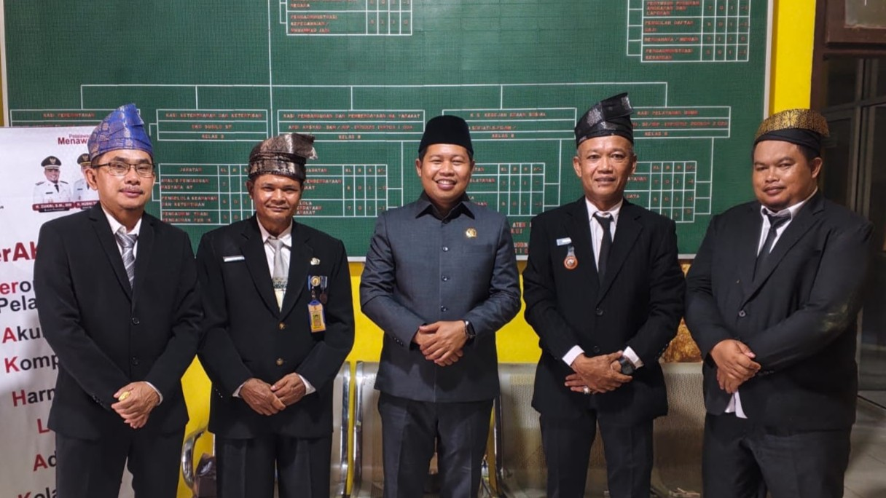
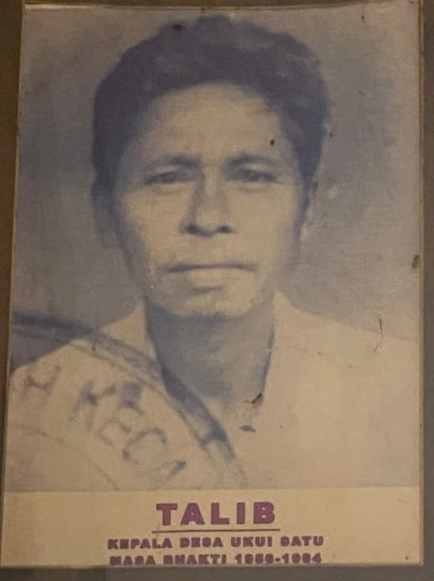
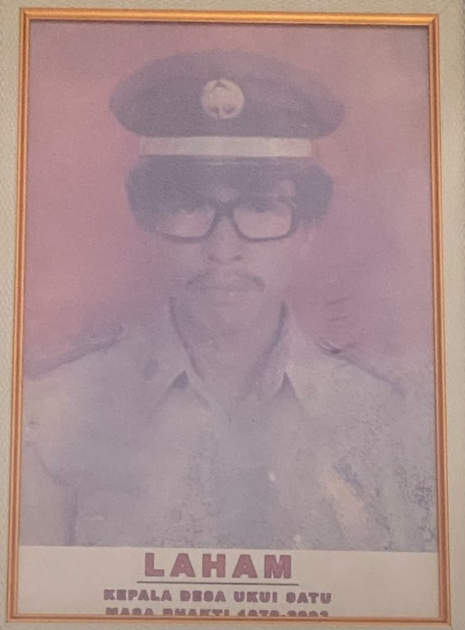
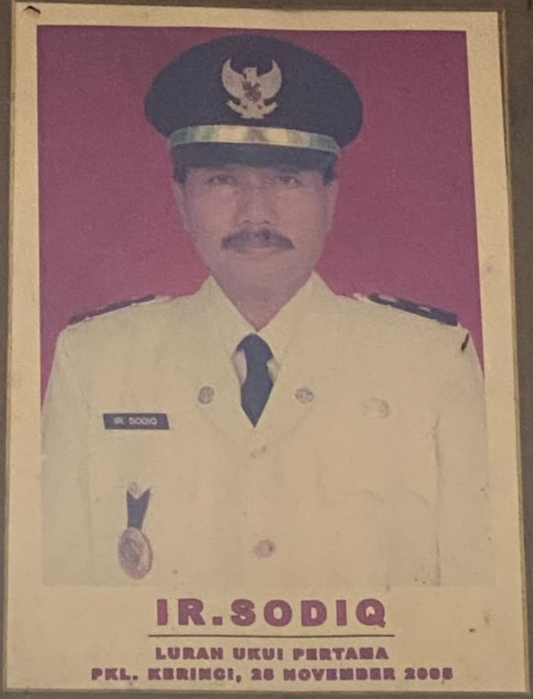
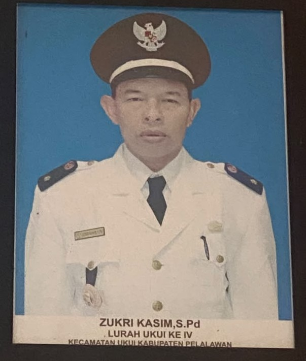

Pemimpin Desa

Kepala Desa Ukui dari Masa ke Masa
Profil 8 pemimpin terakhir yang telah berjasa dalam membangun dan memajukan Desa Ukui.

1956 – 1964
TALIB
Kepala Desa Ukui Satu

1978 – 1983
LAHAM
Kepala Desa Ukui Satu
2004 – 2005
SUDIRMAN
Kepala Desa Ukui Satu

25 NOVEMBER 2005
IR.SODIQ
Kepala Desa Ke Satu
17 JUNI 2010
ZUKRI KASIM.S.P.d
Lurah Ukui Ke Dua
20 FEBUARI 2012
ADNAN.SH
Lurah Ukui Ke Tiga

-
ZUKRI KASIM.S.P.d
Lurah Ukui Ke Empat
Menjabat Saat Ini
Sekarang
SUWARDI.S.I.P
Lurah Ukui Saat Ini
*Data per Juli 2026